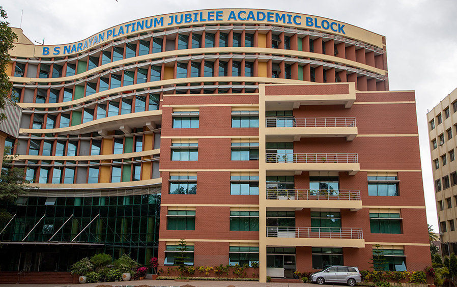
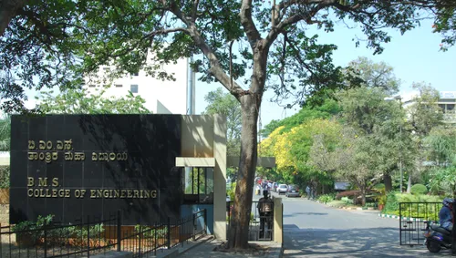

BMSCE
Discover the history, vision, and extraordinary accomplishments of the First Private Engineering College in the country.
Vision: Promoting Prosperity of mankind by augmenting human resource capital through quality Technical Education & Training.
Mission: Accomplish Excellence in the field of Technical Education through Education, Research and Service needs of Society.

B.M.S. College of Engineering (BMSCE) Bengaluru has the unique distinction of being the first private engineering college established in the country. Started in the year 1946, the institution owes its existence to the vision of its beloved founders, Late Sri. B. M. Sreenivasaiah and his illustrious son Late Sri. B. S. Narayan. Over the past 77 years of its illustrious existence, BMSCE has produced more than 40,000 graduates who have enriched the world through their immense contributions as engineers or leaders for mankind.
The Institution is approved by the All India Council of Technical Education (AICTE) and permanently affiliated to Visvesvaraya Technological University (VTU), Belagavi. The college is aided by the Government of Karnataka and is approved as a QIP Centre in Engineering & Technology by AICTE. It became autonomous and UGC approved in 2008, shifting effectively to Outcomes-based Education. Among its numerous distinctions, BMSCE was awarded best performance rating in all three Phases of TEQIP and is the only Partner institution in the country of the Melton Foundation, USA, fostering cross-cultural learning.
Meet Our Visionaries & FounderOur college is accredited by the National Assessment and Accreditation Council (NAAC) with the highest grade of A++ in the Second Cycle (CGPA 3.83/4). All Undergraduate and Post-Graduate Programmes hold NBA tier I format Accreditation.
AICTE recognized the college under the Doctoral Fellowship Scheme from 2018-19. We are listed as a lead innovator for 2020 and 2021 by Clarivate Analytics based on the Derwent World Patent Index, and ranked in the band-Excellent in ARIIA (ATAL Rankings) 2021.
BMSCE is one of the 100 colleges in the country awarded the 5G use case laboratory. We currently offer 17 Undergraduate and 15 Postgraduate courses in both conventional and emerging areas. Over 344 scholars are pursuing their Ph.D. in our 14 research centres. We also recently achieved the prestigious ISO 14001:2015 certification for our Environmental Management System.

The Institution holds MOUs with various organizations across the globe. It has developed numerous Centres of Excellence, cutting-edge laboratories, and incubation centres in collaboration with industries. This enriches the learning experiences of our highly diverse student population and matches our rigorous programme outcomes.
State of the art infrastructure, pedagogy, academic innovations, and entrepreneurship opportunities enable the institute to produce thoroughly industry-ready graduates. This consistently makes BMSCE a top preferred higher educational destination for students from India and across various countries.
Playing a significant role in developing human resource capital for India and abroad, the College boasts one of the largest student populations among engineering colleges in Karnataka. Student academic performance is constantly exceptional.
The Institution has an excellent Training and Placement Cell where more than 350 reputed companies visit our campus every year. Our results and placements bear testimony to our high educational standards, facilitated through project-based learning, well-designed curricula, and high-priority pedagogy tools like MOOCs and industry internships.
Our faculties are extensively qualified and dedicated, with many holding positions as NBA and NAAC Evaluators, or Members of BOS, BOE, LIC, AICTE, and VTU governing bodies. Guided by good governance, our College is consistently ranked among the top engineering colleges in the country.